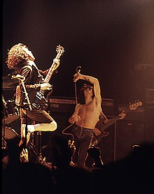
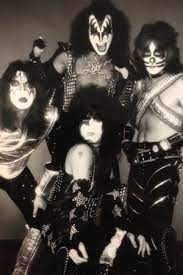
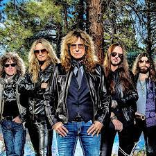
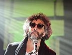
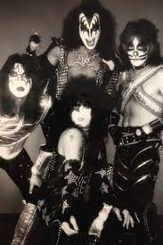
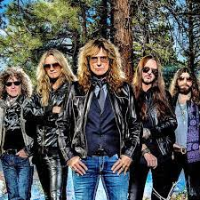
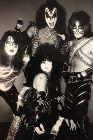
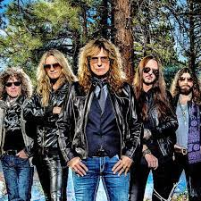

El rock es un amplio género de música popular originado a principios de la década de 1950 en Estados Unidos y que derivaría en un gran rango de diferentes estilos a mediados de los años 1960 y posteriores, particularmente en ese país y Reino Unido. Tiene sus raíces en el rock and roll de los años 50, estilo nacido directamente de géneros como el blues, el rhythm and blues (pertenecientes a la música afroamericana) y el country. También se nutrió fuertemente del blues eléctrico y el folk, además de incorporar influencias del jazz y la música clásica, entre otras fuentes. Instrumentalmente, el rock se ha centrado en la guitarra eléctrica, en general como parte de un grupo integrado por batería, bajo, uno o más cantantes y, algunas veces, instrumentos de teclado como el órgano y el piano. Usualmente, se basa en canciones en compás y una estructura verso-estribillo, sin embargo, el género se ha vuelto extremadamente diverso y las características comunes son difíciles de definir. Como la música pop, las letras se centran a menudo en el amor romántico, pero también tratan un amplio rango de otros temas con un enfoque frecuente en lo social, lo personal y lo político.



El nacimiento del Rock
El Rock inicio en los Estados Unidos a principio de los años 50 el cual por el legendario Chuck Berry, el cual falleció con 90 años después de siete décadas de carrera. Este es considerado de manera indiscutible como uno de los pioneros y forjadores de la música rock and roll. El Rock fue representado por artistas del momento como Bob Diddley.
Diversidad
No entraré mucho en detalles sobre la metodología o sobre los muchos datos que se publicaron, sólo aclaro que se contemplaron los hábitos de consumidores de música de entre 16 y 64 años de edad en 21 países de los cinco continentes.
La lista la encabeza México, es decir, es el país en donde más se escucha música con 25.6 horas a la semana, y lo que me parece perfecto es la distribución de esas horas, ya que el orden es:
1.Rock
2.Pop
3.Pop Latino
4.Musica Regional Mexicana
5.Oldies
Personas del Rock

Fito Paez
Rodolfo Páez (Rosario, 13 de Marzo de 1963), más conocido como Fito Páez, es un músico, compositor, pianista, director de cine y cantante argentino. Integrante de la llamada trova rosarina, es apodado como El trovador del rock argentino y está considerado como uno de los más importantes exponentes del rock de su país y de toda Latinoamérica.
Charley Garcia
Carlos Alberto García (Buenos Aires, 23 de octubre de 1951), conocido por su nombre artístico Charly García, es un músico cantautor, multinstrumentalista, compositor y productor discográfico argentino, considerado una de las figuras más importantes y vanguardistas de la música popular argentina y latinoamericana.
Andrea Echeverry
Andrea Echeverri Arias (Bogotá; 13 de septiembre de 1965), más conocida como Andrea Echeverri, es una cantante de rock y ceramista colombiana. Es vocalista líder y guitarrista segunda del grupo colombiano Aterciopelados, aunque ha desarrollado en paralelo su carrera musical como solista, siendo reconocida por su habilidad en composición e interpretación de diversos instrumentos como la gaita, percusión, entre otros.
Mikel Acosta
Mikel Acosta Erentxun (Caracas, 23 de febrero de 1965) es un cantautor español nacido en Venezuela pero afincado en San Sebastián desde su primer año de vida. Fue el vocalista oficial y líder de Duncan Dhu y desde 1992 actúa en solitario bajo su propio nombre.
 


